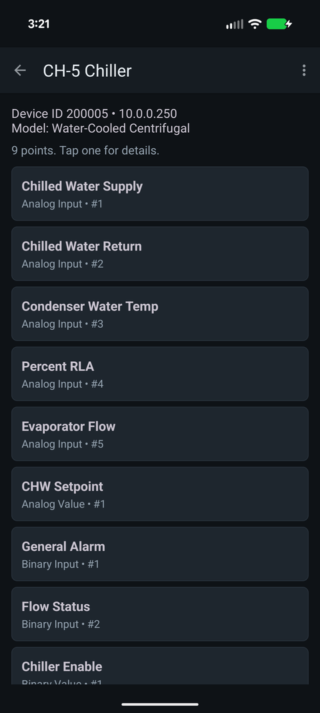

What is a BACnet IP points list?
Updated 11 October 2026
A BACnet IP points list is a spreadsheet of the data objects your controllers expose on the network. Each row is one point (a sensor reading, a setpoint, a command or a status) identified by the device it lives on, its object type (Analog Input, Binary Output and so on) and its instance number, usually with the point name, present value and units. Integrators, analytics vendors and new head-end contractors ask for it before they map anything.

What a point is
BACnet models a controller as a set of objects, and each object
has properties. The one most people care about is Present_Value: what
the point reads or is commanded to right now. A packaged RTU controller might
expose sixty to a hundred objects: supply air temp, fan status, economizer damper
position, occupancy, a handful of setpoints, and a pile of internal values only the
manufacturer's tech will ever look at.
A point is addressed by its type plus instance. Analog Input 3 and Binary Input 3 are different points on the same controller. That pair, together with the device instance, is what an integrator maps, so a list that only gives names isn't much use to them.
What a points list contains
A usable points list has at least these columns:
| Column | Why it matters |
|---|---|
| Device ID (instance) | Which controller the point lives on. Must be unique across the whole BACnet internetwork. |
| Device name / IP address | How a person and a machine find the controller. MS/TP devices behind a router show the router's IP plus a network number and MAC. |
| Object type | Analog Input, Binary Value, Multi-State Output, etc. Tells you the data type and whether the point can be commanded. |
| Object instance | The number within that type. Type plus instance is the point's address on the device. |
| Point name | The Object_Name property, e.g. RTU-3 SA-T or VAV-2-14 ZN-T. Often the only clue to what the point does. |
| Present value | What it reads right now. Shows the point is live and lets the reader sanity-check the units. |
| Units | °F, %, CFM, in. W.C. A number without units is a guess. |
| Status flags | In alarm, fault, overridden, out of service. Tells you whether to trust the value. |
The object types you'll see most
- Analog (Input, Output, Value): temperatures, pressures, valve and damper positions, setpoints.
- Binary (Input, Output, Value): fan status, start/stop commands, enable flags, alarm contacts.
- Multi-state (Input, Output, Value): a short list of named states, such as Off / Low / High or Occupied / Unoccupied / Standby.
As a rule of thumb, Input is a wired sensor, Output a wired actuator and Value a software point, though gateways and equipment controllers bend that rule often. Outputs and many Values can be commanded; see BACnet priority and stuck overrides before anyone writes to one.
Why people ask for one
- Integration. An analytics or FDD platform, a metering or tenant billing system, or a new head-end needs to know what exists before it can map anything.
- Commissioning and troubleshooting. Checking the list against the sequence of operations turns up the sensor that was never wired or the point that's been out of service since startup.
- Turnover. When a building changes owners or controls contractors, the points list is the closest thing to a map of the system.
If someone has asked you for one, see what to send when a vendor asks for your BACnet information. To pull one from a live system, see how to find your BACnet IP points list.